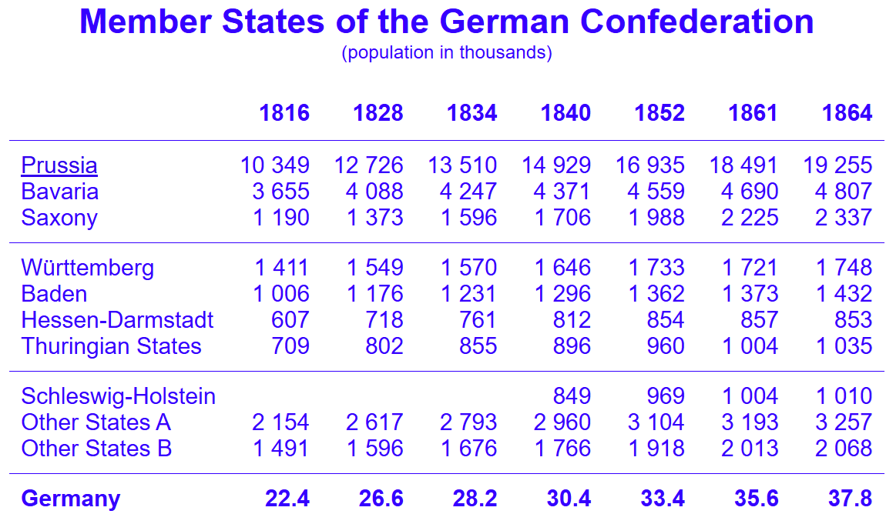
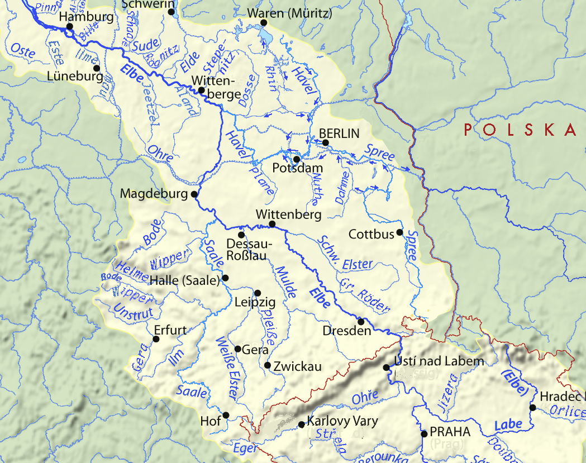
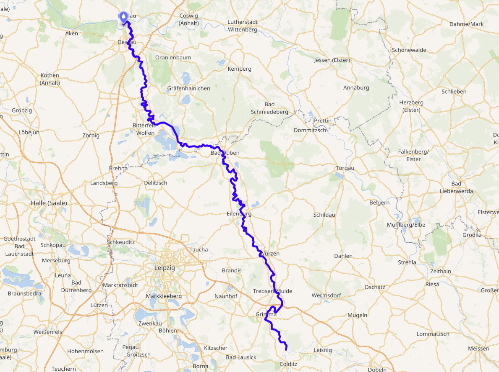
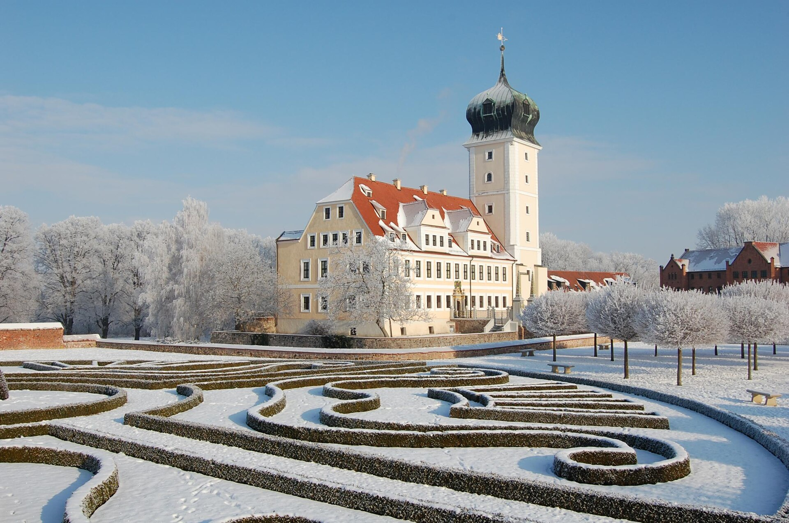
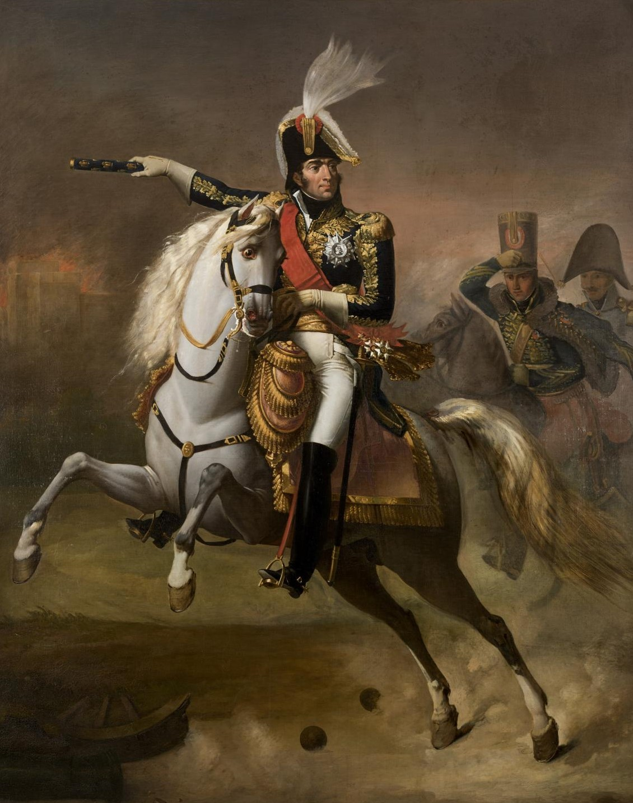
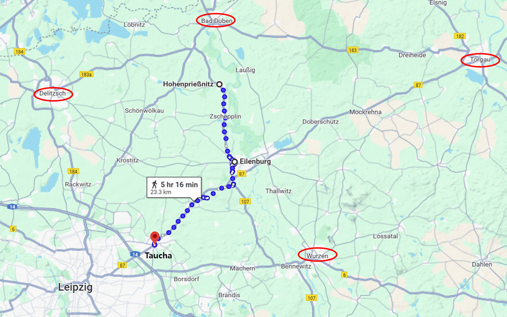
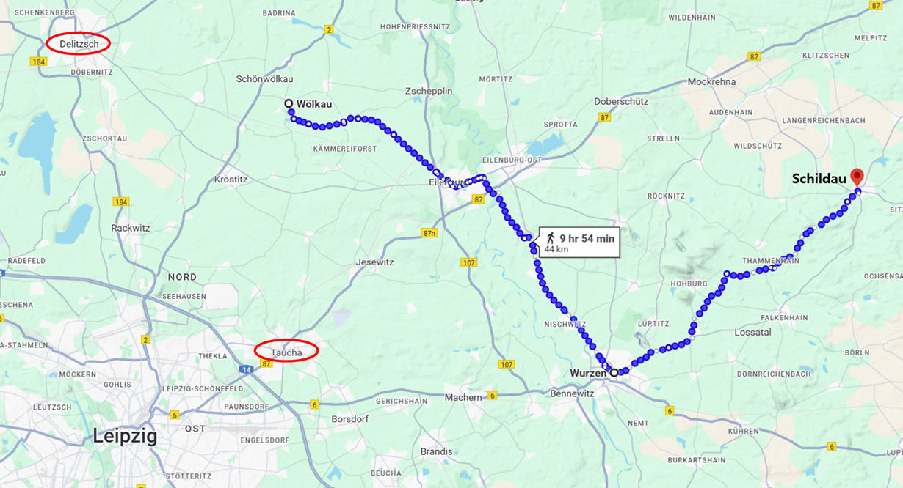

라이프치히로 가는 길 (15) - 원수들의 불화
게시: 2025-02-10T06:30:18+09:00
먼저 블뤼허의 관점에서 전황을 살펴 보겠습니다. 블뤼허 입장에서는 가장 바람직한 것은 자신의 슐레지엔 방면군이 즉각 남쪽의 바트 뒤벤(Bad Düben)으로 진격하여 네의 병력을 밀어내고 10월 6일까지 라이프치히에 도착한 뒤, 거기서 하루 이틀 뒤에 뒤따라 올 베르나도트의 북부 방면군과 합류하는 것이었습니다. 혹시 나폴레옹이 대군을 이끌고 달려와 블뤼허와 베르나도트가 합류하기 전에 블뤼허를 박살낼 위험성도 있었지만, 드레스덴 인근의 연합군이 10월 3일에 보내온 보고서에 따르면 나폴레옹은 분명히 드레스덴에 있었기 때문에 그럴 가능성은 낮다고 본 것입니다. 원래는 베르나도트와의 합류 지점은 라이프치히가 아니라 바트 뒤벤에서 합류하는 것이 계획이었으나, 소극적인 베르나도트는 미적거릴 것이 뻔하다고 생각하고 있었고, 또 첩보에 따르면 라이프치히에는 그랑다르메 병력이 불과 1만 정도 밖에 없다고 했으므로, 베르나도트를 기다리다 시간 낭비를 하고 싶지 않았던 것입니다. 이런 블뤼허의 삐딱한 시선은 베르나도트를 아주 크게 오해한 것은 아니었습니다. 실제로 베르나도트는 무척 소극적이었습니다. 다만 그런 태도는 프로이센인들이 생각하는 것처럼 그가 프랑스인들에게 동료 의식을 느끼기 때문이 아니었습니다. 베르나도트는 매우 실용적인 야심가로서 스웨덴에서 정말 왕이 되고 싶었고, 그러기 위해서는 스웨덴인들이 인정할 만한 공적을 쌓아야 하는데 그러자면 반드시 노르웨이를 스웨덴 것으로 만들어야 한다는 것을 잘 이해하고 있었습니다. 그렇게 노르웨이를 점령하기 위해서는 스웨덴군을 최대한 보존해야 했습니다. 프랑스나 러시아, 프로이센과는 달리 인구가 적은 스웨덴에게는 이번에 내보낸 원정군 3만여 명이 사실상 스웨덴이 내보낼 수 있는 야전군 전체였던 것입니다.

(당시 유럽에서 가장 인구가 많은 나라는 거의 4천만에 가까운 인구를 자랑하던 러시아였고, 그 뒤를 3천만의 프랑스가 바싹 뒤따르고 있었습니다. 프로이센만 하더라도 거의 1천만에 가까운 인구를 가지고 있었지만, 당시 스웨덴은 고작 240만에 불과했습니다. 그러니 베르나도트가 한 명의 병사라도 아끼려 했던 것이 이해는 갑니다.)
그레서 실제로 10월 4일 드디어 엘베강을 건널 때도, 이미 로슬라우에서 대기 중이던 스웨덴군 대신 비텐베르크를 포위 중이던 뷜로의 프로이센 제3군단이 로슬라우까지 행군해와서 먼저 건너라고 명령할 정도였습니다. 다만 이렇게 되면 도강 자체가 하루 연기되는데다가 이런 조치는 스웨덴군이 보기에도 너무나 체면이 깎이는 일이었던 지라, 결국 이 명령은 철회되었고 10월 4일 스웨덴군이 먼저 강을 건너고 다음 날 로슬라우에 도착한 뷜로의 프로이센 제3군단이 도강을 했습니다. 그렇다고 해서 베르나도트의 소극적 태도가 바뀌었는가 하면 그건 또 아니어서, 스웨덴 군단의 사령관인 슈테딩크(Stedingk)에게 '진격 속도보다는 조심이 먼저이고, 절대 적의 함정에 걸려들지 말라'는 지침을 내렸습니다. 그걸로는 부족했기 때문에, 베르나도트는 이미 다른 지점에서 강을 건넌 빈칭게로더의 러시아 기병군단이 먼저 휩쓸고 지나간 뒤를 따라 스웨덴군을 진격시켰습니다. 결국 베르나도트의 목표는 최대한 피를 흘리지 않고 전과를 올리는 것이었는데, 이는 전투에서 얼마나 많은 사상자를 냈는지가 지휘관의 용기와 투지를 보여주는 척도였던 당시로서는 꽤 참신한 것이기는 했습니다.

(스웨덴 군단의 총사령관 슈테딩크(Curt von Stedingk)입니다. 그는 당시 67세였는데, 그는 군인보다는 이런저런 외교관 노릇으로 더 많은 활동을 했습니다. 이때는 정말 군인 역할을 수행했는데, 베르나도트가 워낙 스웨덴군을 아끼느라 사실 뭘 해볼 기회를 거의 얻지 못했습니다. 그는 당시 베르나도트의 소극적 작전에 대해 몹시 불만이 많았다고 합니다.)
분명한 것은 블뤼허와 베르나도트의 궁극적인 목표지점은 라이프치히라는 것이었습니다. 이건 대단한 전략가가 아니었던 네에게조차도 분명해보였습니다. 네는 10월 4일 나폴레옹에게 블뤼허가 엘베강 도강에 성공했다는 것을 알리면서, '이대로라면 10월 6일까지 연합군은 최소 10만의 병력을 끌고 라이프치히에 닿을 수 있다'라고 보고했으니까요. 그런데 여기서 네에게 고민거리가 생깁니다. 바로 멀더(Mulde) 강이었습니다.

(엘베강과 그 지류들을 표시한 강역도입니다.)

(그 중에서 멀더강만 또렷하게 표시한 지도입니다. 라이프치히와 드레스덴은 멀더강에 의해 양분됩니다.) 멀더강은 작센과 보헤이마의 자연 국경인 얼츠비어거 산맥에서 흘러나오는 두 개의 지류인 츠비카우 멀더(Zwickauer Mulde)와 프라이베르크 멀더(Freiberger Mulde)가 콜디츠(Colditz) 인근에서 합해져 흐르는 강으로서, 멀더강도 결국 데사우-로슬라우 인근에서 엘베강에 합류하는 지류입니다. 작다면 작은 강이지만 사람이나 말이 걸어서 건널 수 있는 개천 수준보다는 큰 강이었으므로, 군사적으로 꽤 중요한 장애물이었습니다. 문제는 이 멀더강이 작센 평원을 남북으로 흐르면서 라이프치히와 드레스덴을 갈라놓는다는 점이었습니다. 특히 바트 뒤벤에서 멀더강은 서쪽으로 크게 굽이쳐 흘렀는데, 덕분에 엘스터에서 강을 건넌 블뤼허는 멀더강 우안에, 데사우에서 강을 건넌 베르나도트는 멀더강 좌안에 위치하게 되었습니다. 이렇게 강을 두고 적군이 둘로 갈라진 상황을 만났다면 젊은 시절 나폴레옹이라면 얼씨구나 하면서 달려들어 양측의 적군을 하나씩 각개격파 하려고 했을 것입니다. 그러나 베를린 방면군 사령관은 네였습니다. 네는 흩어진 병력을 박박 긁어모아 집결시킨 3만4천 병력으로, 멀더강을 방어선으로 삼아 블뤼허를 막아내려고 했습니다. 그러나 가만 생각해보니 자신이 가진 병력으로는 베르나도트든 블뤼허든 어느 한쪽을 상대하기도 어려운 열세였습니다. 게다가 가장 어려운 부분이 나폴레옹이 있는 드레스덴은 멀더강 동쪽에 있다는 점이었습니다. 블뤼허가 라이프치히로 진격하는 것을 막겠다고 멀더강 좌안에서 방어진을 치고 있는데 정작 나폴레옹이 라이프치히를 포기하고 드레스덴에서 결판을 짓겠다고 나선다면, 낙동강 오리알 신세가 된 네는 멀더강 우안의 블뤼허는 물론 좌안 북쪽에서 내려온 베르나도트로부터도 공격받고 속절없이 무너지는 수 밖에 없었습니다.

(델리취(Delitzsch)는 작센의 소도시로서, 지금도 인구 2만5천 정도입니다. 이 도시엔 나폴레옹 이전에도 슬라브족 등 외적의 침입이 잦았는데, 17세기 30년전쟁 때는 스웨덴군이 쳐들어왔습니다. 전설에 따르면 스웨덴군의 최후 침략때, 탑 관리자의 딸이 그들의 모습을 보고 나팔을 불어 미리 경고한 덕분에 스웨덴군을 물리칠 수 있었는데. 지금도 그 승리를 기리기 위해 중세풍의 축제가 매년 열린다고 합니다. 다만 이 도시는 나폴레옹 몰락 이후 빈 회의에서 프로이센이 작센으로부터 빼앗아 갔습니다. 사진은 델리취 성(Schloss Delitzsch)의 모습입니다.) 원래 멀더강 좌안이자 라이프치히 북쪽인 델리취(Delitzsch)에서 적을 막을 생각이던 네는 휘하 각 부대에게 그 일대의 지정 장소로, 즉 멀더강 서쪽으로 이동하라고 명령했었습니다. 그러나 거기까지 생각이 미치자 네는 갑자기 명령을 180도로 바꾸어 멀더강 우안, 즉 동쪽으로 이동을 명했습니다. 이건 완전히 터무니 없는 생각은 아니었습니다. 나폴레옹이 진작부터 네에게 계속 강조해온 것이, 엘베 강변의 요새이자 주요 탄약고인 토르가우(Torgau)에서 멀리 떨어지지 말라는 것이었으니까요. 그럼에도 불구하고, 서쪽으로 가라고 하더니 갑자기 동쪽으로 이동하라고 명령을 바꾸는 것은 부하들에게 혼란을 주기에 충분한 지휘였습니다. 그러나 아무도 '용자 중의 용자' (le Brave des braves)라고 불렸던 네(Michel Ney)의 용기나 권위에 토를 달지는 못했습니다...만 토를 단 사람이 있었습니다. 바로 제6군단장 마르몽이었습니다.

(마르몽의 기마 초상화입니다. 대략 1810년, 그러니까 바그람 전투 이후 마르몽이 원수로 승진한 후에 나폴레옹 1세의 명에 따라 그려진 것인데, 원래 튈르리 궁전에 있는 '원수실'(Salle des Maréchaux)에 걸어두기 위해 그려진 것입니다. 화가는 별로 유명하지는 않은 Jacques-Luc Barbier-Walbonne라는 사람입니다.) 원래 마르몽은 베를린 방면군 소속이 아니었고, 당시엔 라이프치히와 그 남쪽 알텐부르크 등지에서 보헤미아 방면군의 침공에 대비하여 포진한 병력 중 하나였습니다. 그러나 블뤼허의 엘베강 도하 이전부터 네가 병력 부족에 대해 계속 툴툴 거리자 나폴레옹이 네의 명령을 받으라고 마르몽에게 지시해둔 바 있었습니다. 그런데 마르몽은 훗날 '나폴레옹보다 내가 전술 측면에서 더 우수하다'라고 주장할 정도로 자의식이 강한 사람이었습니다. 마르몽은 자신이 네의 명령을 받아야 한다는 것에 무척이나 기분이 좋지 않은 상태였습니다. 아무튼 네에게 즉각 집결하라는 명령을 받은 마르몽은 라이프치히에 1개 여단만 남겨둔 채 북진했는데, 도중에 왔다갔다 하는 네의 명령서 꼬라지를 보니 속이 터질 수 밖에 없었습니다. 마르몽이 남긴 기록에는 '당시 네가 비이성적인 공포와 우려에 사로잡혀 있었다'라고 되어 있습니다. 마르몽은 결정적인 군사적 이점인 멀더강 방어선을 제멋대로 포기하고 모조리 멀더강 우안으로 이동하라는 네의 명령에 대해서 무척이나 불만이 많았는데, 더군다나 네 자신은 멀더강 우안으로 건너가면서 정작 자기 자신은 멀더강 좌안에 남아 라이프치히 북동쪽의 타우차(Taucha)로 가서 라이프치히를 지키라는 명령을 받자, 더 이상 가만히 있을 수는 없다고 판단했습니다. 그는 드레스덴에 있는 나폴레옹에게 편지를 썼습니다. 한마디로 직속상관 네에 대해 뒷담화를 하는 내용으로서, 이는 엄연한 군 명령체계를 정면으로 뒤흔드는 행동이었습니다. 아마도 마르몽은 제1차 이탈리아 침공 때부터 쌓아온 나폴레옹과의 우정을 믿고 이런 행동을 저질렀을 것입니다. 편지 내용은 대충 이랬습니다. '폐하께서는 바쁘실 테니 네가 펼치는 작전의 멍청함에 대해서 일일이 나열하지는 않겠습니다만 네가 하는 대로 내버려 두면 우리 군 전체가 무너질 판국입니다, 속히 직접 오셔서 상황을 바로 잡아주십시요.'

(마르몽의 이동 경로입니다. 마르몽은 네의 명령에 따라 바트 뒤벤 남쪽의 호헨프리스니츠(Hohenpriessnitz)에 주둔하고 있다가 멀더 강변에 위치한 도시인 아일렌부르크(Eilenburg)로 후퇴하여, 거기서 멀더강을 건너라고 명령을 받았었습니다. 그러나 마르몽은 멀더강 방어선을 포기하라는 네의 명령에 불만을 품고 네의 명령에 매우 미적거리며 아일렌부르크에서 움직이지 않고 불복종하는 모습을 보였습니다. 네도 마르몽 못지 않은 고자질장이였으므로 그는 마르몽의 명령 불복종에 대해 나폴레옹에게 편지를 써서 계속 일러 바치고 있었습니다. 마르몽이 아일렌부르크에서 멀더강 동쪽으로 움직이지 않자, 네도 '그럼 니 소원대로 해주마'라는 식으로 마르몽을 라이프치히 쪽인 타우차로 보내버린 것입니다. 병력을 집결해야 하는 마당에, 아무리 마르몽이 괘씸하다고 해도 이건 잘하는 지휘 같지는 않습니다.)

(네의 본대가 움직인 경로입니다. 이 지도와, 위의 마르몽의 이동 경로를 보면 아일렌부르크에서 서로 교차하게 되어 있습니다. 즉, 네 자신이 멀더강을 건널 때까지 연합군을 막으라는 역할을 마르몽에 준 것임을 알 수 있습니다. 그런데 네는 마르몽이 후퇴할 때에 연합군에게 홀로 노출되지 않도록 10월 6일 오후 4시까지는 뵐카우(Wölkau)에 남아있겠다고 약속했는데, 실제로는 오후 1시에 이동을 시작했습니다. 마르몽은 네가 (고작) 3시간 먼저 움직여 자신을 적의 위협에 고스란히 노출시켰다고 대노했는데, 그런 점도 저런 고자질 편지를 보낸 것에 큰 몫을 했습니다.) 그에 대해 나폴레옹은 즉각 답신을 보내왔습니다. 반가운 마음으로 편지를 열어본 마르몽은 어떤 내용을 보았을까요? Source : The Life of Napoleon Bonaparte, by William Milligan Sloane Napoleon and the Struggle for Germany, by Leggiere, Michael V With Napoleon's Guns by Colonel Jean-Nicolas-Auguste Noël https://www.britannica.com/event/Napoleonic-Wars/Dispositions-for-the-autumn-campaign https://www.napoleon.org/en/history-of-the-two-empires/timelines/1813-and-the-lead-up-to-the-battle-of-leipzig/ http://www.historyofwar.org/articles/campaign_leipzig.html https://en.wikipedia.org/wiki/Delitzsch https://en.wikipedia.org/wiki/Mulde https://en.wikipedia.org/wiki/Auguste_de_Marmont https://www.napoleon-series.org/research/abstract/population/population/c_nationalpopulation.html https://www.tacitus.nu/historical-atlas/population/germany.htm